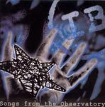

Home Artist links Label link

Isildurs Bane - Songs From The Observatory
| Artist: | Isildurs Bane |
| Title: | Songs From The Observatory |
| Label: | Ataraxia Music ATXEP1 |
| Length(s): | 14 minutes |
| Year(s) of release: | 2005 |
| Month of review: | [12/2005] |
Line up
Jonas Christophs - electric guitar
Mariette Hansson - electric guitar, vocals
Fredrik "Gicken" Johansson - bass
Mats Johansson - keys, backing vocals, treatments
Kjell Severinsson - drums
Therese Allbjer - backing vocals
Mats "MP" Persson - treatments
Christian Saggese - classical guitar
Peter Skoog - violin
Michael Nielsen - violin
Jan Svensson - viola
Anna-Stina Mühlhäuser - cello
Tracks
| 1) | People Are Afraid | 2.07
|
| 2) | Without Grace | 5.20
|
| 3) | Under The Wind | 3.18
|
| 4) | No Choice (I'm Still Here) (bonus Track) | 3.36
|
Summary
The first three tracks come from the DVD Mind Vol. 5: The Observatory,
the fourth is previously unreleased. Note however that all these tracks
have their first release on cd with this item, which is good for people
like me who do not like DVDs at all.
The music
People Are Afraid has the vocals of Mariette Hansen and a jangling guitar
and some nice moody strings. I have to admit that the music sounds a lot better
when listened to with headphones. I played this EP a number of times without
and the music did not catch my ear that much. Now it does. But is this prog?
To me this sound like good melancholic ballad, a bit in the vein of
some of these English pop bands that utilize orchestra's. But it is really
a nice song. Without Grace that follows right after, is even a bit sparser.
A reference here is Peter Gabriel even if it is still Hansson singing.
There must be a larger audience for this than the prog people? But the same held
for the excellent predecessor Mind Vol. 4: Pass and I wonder what came of that.
The song has some excellent melodic material and the same light classical,
balladic approach as on the opener. The end is a bit more synthy and weird
even.
Under The Wind continues the light classical style, with a very melancholic
string section. Then the percussives set in for the chorus. On the whole a
bit less appealing than the two predecessors.
No Choice (I'm Still Here) is an unreleased track, also not part of the DVD.
The synthy percussives and the incidental slight vocoding give the song
something special. Hansson shows some soulful vocals at the end.
Conclusion
A good EP filled with pop oriented material, although with light classical
leanings. Good songs, good melodies, excellently performed. Also for non-progrockers,
although progpurists will think this too middle-of-the-road. But that's their loss.
© Jurriaan Hage